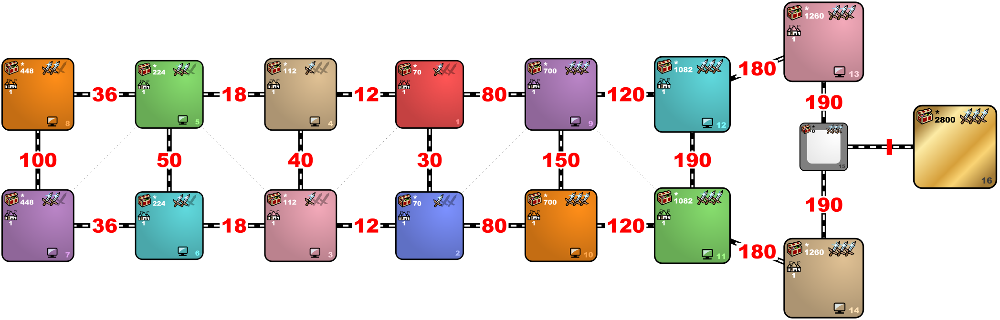

Diplo_Race
Availible Skills: Diplomacy, All Magics
Availible Artifacts: Diplomat's Cloak
Spells are limited. Your level 2 Mage Guild will have Visions for sure.
Starting spells plus Fly, Town Portal, Disguise and Summon Elementals are banned from Guilds.
Red meets AIs in ascending Color Id order (Tan, Green, Orange, Purple, Teal, Pink).
Blue meets AIs in descending Color Id order (Pink, Teal, Purple, Orange, Green, Tan).
By Warzyw
Last update: 01.02.2024
Settings
Size: XL
Human Players: 2
Computer Players: 6
Teams: no
Roads: Fast
Water: no
Monsters: Strong
Tournament Rules: off
PvP Neutral Combat: off
Simultaneous Turns: until meeting
Timer: 12:00-5:00-01:30
Trade: Roll a pair of Towns. Then trade for Color and Faction.
Select AI factions like on Mini-Nostalgia.
Difficulty: 160%
Starting Bonus: Artifact
Starting Hero: Unrestricted Choice
Handicaps: no
Restarts: no
Technical Restarts: no
Diplo_Race

Technical datails that you can get from the Template Editor
-
Enabled heroes: Orrin (Archery), Valeska (Archers), Edric (Griffins), Sylvia (Navigation), Lord Haart (Estates), Sorsha (Swordsmen), Christian (Ballista), Tyris (Cavaliers), Rion (First Aid), Adela (Bless), Cuthbert (Weakness), Adelaide (Frost Ring), Ingham (Monks), Sanya (Eagle Eye), Loynis (Prayer), Caitlin (+350 Gold), Mephala (Armorer), Ufretin (Dwarves), Jenova (+350 Gold), Ryland (Dendroids), Thorgrim (Resistance), Ivor (Elves), Clancy (Unicorns), Kyrre (Logistics), Coronius (Slayer), Uland (Cure), Elleshar (Intelligence), Gem (First Aid), Malcom (Eagle Eye), Melodia (Fortune), Alagar (Ice Bolt), Aeris (Pegasi), Piquedram (Gargoyles), Thane (Genies), Josephine (Golems), Neela (Armorer), Torosar (Ballista), Fafner (Nagas), Rissa (+1 Mercury), Iona (Genies), Astral (Hypnotize), Halon (Mysticism), Serena (Eagle Eye), Daremyth (Fortune), Theodorus (Magi), Solmyr (Chain Lightning), Cyra (Haste), Aine (+350 Gold), Fiona (Hell Hounds), Rashka (Efreet), Marius (Demons), Ignatius (Imps), Octavia (+350 Gold), Calh (Gogs), Pyre (Ballista), Nymus (Pit Fiends), Ayden (Intelligence), Xyron (Inferno), Axsis (Mysticism), Olema (Weakness), Calid (+1 Sulfur), Ash (Bloodlust), Zydar (Sorcery), Xarfax (Fireball), Straker (Walking Dead), Vokial (Vampires), Moandor (Liches), Charna (Wights), Tamika (Black Knights), Isra (Necromancy), Clavius (+350 Gold), Galthran (Skeletons), Septienna (Death Ripple), Aislinn (Meteor Shower), Sandro (Sorcery), Nimbus (Eagle Eye), Thant (Animate Dead), Xsi (Stone Skin), Vidomina (Necromancy), Nagash (+350 Gold), Lorelei (Harpies), Arlach (Ballista), Dace (Minotaurs), Ajit (Beholders), Damacon (+350 Gold), Gunnar (Logistics), Synca (Manticores), Shakti (Troglodytes), Alamar (Resurrection), Jaegar (Mysticism), Malekith (Sorcery), Jeddite (Resurrection), Geon (Eagle Eye), Deemer (Meteor Shower), Sephinroth (+1 Crystal), Darkstorn (Stone Skin), Yog (Cyclopes), Gurnisson (Ballista), Jabarkas (Orcs), Shiva (Rocs), Gretchin (Goblins), Krellion (Ogres), Crag Hack (Offense), Tyraxor (Wolf Riders), Gird (Sorcery), Vey (Ogres), Dessa (Logistics), Terek (Haste), Zubin (Precision), Gundula (Offense), Oris (Eagle Eye), Saurug (+1 Gems), Bron (Basilisks), Drakon (Gnolls), Wystan (Lizardmen), Tazar (Armorer), Alkin (Gorgons), Korbac (Serpent Flies), Gerwulf (Ballista), Broghild (Wyverns), Mirlanda (Weakness), Rosic (Mysticism), Voy (Navigation), Verdish (First Aid), Merist (Stone Skin), Styg (Sorcery), Andra (Intelligence), Tiva (Eagle Eye), Pasis (Psychic Elementals), Thunar (Earth Elementals), Ignissa (Fire Elementals), Lacus (Water Elementals), Monere (Psychic Elementals), Erdamon (Earth Elementals), Fiur (Fire Elementals), Kalt (Water Elementals), Luna (Fire Wall), Brissa (Haste), Ciele (Magic Arrow), Labetha (Stone Skin), Inteus (Bloodlust), Aenain (Disrupting Ray), Gelare (+350 Gold), Grindan (+350 Gold), Sir Mullich (Speed), Adrienne (Fire Magic), Catherine (Swordsmen), Dracon (Enchanters), Gelu (Sharpshooters), Kilgor (Behemoths), Haart Lich (Black Knights), Mutare (Dragons), Roland (Swordsmen), Mutare Drake (Dragons), Boragus (Ogres), Xeron (Devils), Corkes (Offense), Jeremy (Cannon), Illor (Stormbirds), Derek (Crew Mates), Leena (+350 Gold), Anabel (Pirates), Cassiopeia (Nymphs), Miriam (Scouting), Casmetra (Sea Witches), Eovacius (Clone), Spint (Sorcery), Andal (+1 Crystal), Manfred (Fireball), Zilare (Forgetfulness), Astra (Cure), Dargem (Air Shield), Bidley (Sea Dogs), Tark (Nix), Elmore (Navigation), Beatrice (Scouting), Kinkeria (Learning), Ranloo (Ballista), Giselle (Interference)
-
Starting towns: All allowed
-
Max Battle Rounds: unlimited
-
Hero Hiring is Enabled
- Enabled artifacts:Diplomat's Cloak
- Disabled artifacts:Centaur's Axe, Blackshard of the Dead Knight, Greater Gnoll's Flail, Ogre's Club of Havoc, Sword of Hellfire, Titan's Gladius, Shield of the Dwarven Lords, Shield of the Yawning Dead, Buckler of the Gnoll King, Targ of the Rampaging Ogre, Shield of the Damned, Sentinel's Shield, Helm of the Alabaster Unicorn, Skull Helmet, Helm of Chaos, Crown of the Supreme Magi, Hellstorm Helmet, Thunder Helmet, Breastplate of Petrified Wood, Rib Cage, Scales of the Greater Basilisk, Tunic of the Cyclops King, Breastplate of Brimstone, Titan's Cuirass, Armor of Wonder, Sandals of the Saint, Celestial Necklace of Bliss, Lion's Shield of Courage, Sword of Judgement, Helm of Heavenly Enlightenment, Quiet Eye of the Dragon, Red Dragon Flame Tongue, Dragon Scale Shield, Dragon Scale Armor, Dragonbone Greaves, Dragon Wing Tabard, Necklace of Dragonteeth, Crown of Dragontooth, Still Eye of the Dragon, Clover of Fortune, Cards of Prophecy, Ladybird of Luck, Badge of Courage, Crest of Valor, Glyph of Gallantry, Speculum, Spyglass, Amulet of the Undertaker, Vampire's Cowl, Dead Man's Boots, Garniture of Interference, Surcoat of Counterpoise, Boots of Polarity, Bow of Elven Cherrywood, Bowstring of the Unicorn's Mane, Angel Feather Arrows, Bird of Perception, Stoic Watchman, Emblem of Cognizance, Statesman's Medal, Diplomat's Ring, Ambassador's Sash, Ring of the Wayfarer, Equestrian's Gloves, Necklace of Ocean Guidance, Angel Wings, Charm of Mana, Talisman of Mana, Mystic Orb of Mana, Collar of Conjuring, Ring of Conjuring, Cape of Conjuring, Orb of the Firmament, Orb of Silt, Orb of Tempestuous Fire, Orb of Driving Rain, Recanter's Cloak, Spirit of Oppression, Hourglass of the Evil Hour, Tome of Fire Magic, Tome of Air Magic, Tome of Water Magic, Tome of Earth Magic, Boots of Levitation, Golden Bow, Sphere of Permanence, Orb of Vulnerability, Ring of Vitality, Ring of Life, Vial of Lifeblood, Necklace of Swiftness, Boots of Speed, Cape of Velocity, Pendant of Dispassion, Pendant of Second Sight, Pendant of Holiness, Pendant of Life, Pendant of Death, Pendant of Free Will, Pendant of Negativity, Pendant of Total Recall, Pendant of Courage, Everflowing Crystal Cloak, Ring of Infinite Gems, Everpouring Vial of Mercury, Inexhaustible Cart of Ore, Eversmoking Ring of Sulfur, Inexhaustible Cart of Lumber, Endless Sack of Gold, Endless Bag of Gold, Endless Purse of Gold, Legs of Legion, Loins of Legion, Torso of Legion, Arms of Legion, Head of Legion, Sea Captain's Hat, Spellbinder's Hat, Shackles of War, Orb of Inhibition, Vial of Dragon Blood, Armageddon's Blade, Angelic Alliance, Cloak of the Undead King, Elixir of Life, Armor of the Damned, Statue of Legion, Power of the Dragon Father, Titan's Thunder, Admiral's Hat, Bow of the Sharpshooter, Wizard's Well, Ring of the Magi, Cornucopia, Pendant of Reflection, Ironfist of the Ogre, Trident of Dominion, Shield of Naval Glory, Royal Armor of Nix, Crown of the Five Seas, Wayfarer's Boots, Runes of Imminency, Demon's Horseshoe, Shaman's Puppet, Hideous Mask, Ring of Suppression, Pendant of Downfall, Ring of Oblivion, Cape of Silence, Golden Goose, Horn of the Abyss, Charm of Eclipse, Seal of Sunset, Plate of Dying Light
- Enabled spells:Visions, View Air, Dimension Door, Quicksand, Land Mine, Force Field, Earthquake, Lightning Bolt, Implosion, Destroy Undead, Armageddon, Fire Shield, Prot. from Water, Prot. from Earth, Anti-Magic, Magic Mirror, Sacrifice, Mirth, Sorrow, Misfortune, Frenzy, Counterstrike, Berserk, Blind, Teleport
- Disabled spells:Summon Boat, Scuttle Boat, View Earth, Disguise, Fly, Water Walk, Town Portal, Fire Wall, Magic Arrow, Ice Bolt, Chain Lightning, Frost Ring, Fireball, Inferno, Meteor Shower, Death Ripple, Shield, Air Shield, Protection from Air, Protection from Fire, Dispel, Cure, Resurrection, Animate Dead, Bless, Curse, Bloodlust, Precision, Weakness, Stone Skin, Disrupting Ray, Prayer, Fortune, Haste, Slow, Slayer, Hypnotize, Forgetfulness, Remove Obstacle, Clone, Fire Elemental, Earth Elemental, Water Elemental, Air Elemental
- Enabled secondary skills: Diplomacy, Fire Magic, Air Magic, Water Magic, Earth Magic
- Disabled secondary skills: Pathfinding, Archery, Logistics, Scouting, Navigation, Leadership, Wisdom, Mysticism, Luck, Ballistics, Eagle Eye, Necromancy, Estates, Scholar, Tactics, Artillery, Learning, Offense, Armorer, Intelligence, Sorcery, Resistance, First Aid, Interference
- Treasure
| Index | Zones | Min | Max | Density | Min | Max | Density | Min | Max | Density |
|---|
| 0 | White zones | | | | | | | | | |
| 70 | Human zones | 5000 | 5000 | 2 | 7500 | 7500 | 4 | 10000 | 10000 | 3 |
| 112 | 3, 4 | 8000 | 8000 | 2 | 12000 | 12000 | 4 | 16000 | 16000 | 3 |
| 224 | 5, 6 | 16000 | 16000 | 2 | 24000 | 24000 | 4 | 32000 | 32000 | 3 |
| 448 | 7, 8 | 32000 | 32000 | 2 | 48000 | 48000 | 4 | 64000 | 64000 | 3 |
| 700 | 9, 10 | 50000 | 50000 | 2 | 75000 | 75000 | 4 | 100000 | 100000 | 3 |
| 1082 | 11, 12 | 78000 | 78000 | 2 | 116000 | 116000 | 4 | 154000 | 154000 | 3 |
| 1260 | 13, 14 | 90000 | 90000 | 2 | 135000 | 135000 | 4 | 180000 | 180000 | 3 |
| 2800 | Golden zones | 200000 | 200000 | 2 | 300000 | 300000 | 4 | 400000 | 400000 | 3 |
- Terrain
| Zone | Terrain |
|---|
| Starting zones | Same as Town |
| Neutral zones | Sand |
- No terrain rules
- Town types allowed
| Zone | Town types |
|---|
| Human zones | All but Stronghold, Factory |
- No town rules
- Monsters disposition: Hostile (4–10)
- Monsters joining percent: 100%
- Monsters join only for money: No
- Monster / Plague weeks: Enabled
- Object Rules
-
No Global Rules
-
White zones
| Rule Type | Object | Value | Frequency | Max per Zone |
|---|
| Disable | every object | | | |
-
Golden zones
| Rule Type | Object | Value | Frequency | Max per Zone |
|---|
| Disable | every object | | | |
| Enable / Edit | Treasure Chest | 100000 | default | no limit |
-
Zones 7, 8
| Rule Type | Object | Value | Frequency | Max per Zone |
|---|
| Disable | every object | | | |
| Enable / Edit | Treasure Chest | 16000 | default | no limit |
-
Human zones
| Rule Type | Object | Value | Frequency | Max per Zone |
|---|
| Disable | every object | | | |
| Enable / Edit | Treasure Chest | 2500 | default | no limit |
-
Zones 9, 10
| Rule Type | Object | Value | Frequency | Max per Zone |
|---|
| Disable | every object | | | |
| Enable / Edit | Treasure Chest | 25000 | default | no limit |
-
Zones 11, 12
| Rule Type | Object | Value | Frequency | Max per Zone |
|---|
| Disable | every object | | | |
| Enable / Edit | Treasure Chest | 39000 | default | no limit |
-
Zones 3, 4
| Rule Type | Object | Value | Frequency | Max per Zone |
|---|
| Disable | every object | | | |
| Enable / Edit | Treasure Chest | 4000 | default | no limit |
-
Zones 13, 14
| Rule Type | Object | Value | Frequency | Max per Zone |
|---|
| Disable | every object | | | |
| Enable / Edit | Treasure Chest | 45000 | default | no limit |
-
Zones 5, 6
| Rule Type | Object | Value | Frequency | Max per Zone |
|---|
| Disable | every object | | | |
| Enable / Edit | Treasure Chest | 8000 | default | no limit |